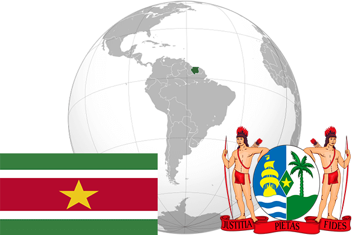

To`liq nomi: Surinam Respublikasi
Region: Shimoli-sharqiy Janubiy Amerika
Qonunchilik shakli: Respublika
Mustaqillik kuni: 25 noyabr 1975-yil
Poytaxt: Paramaribo
Maydoni: 163,270 km²
Chegaradosh davlatlari: Gayana, Fransiya Gviyanasi, Braziliya
Aholisi: 585 824 (2016-yil)
Aholi zichligi: 2,9 /км²
Aholining o`rtacha yoshi: 71,31 yil
Rasmiy tili: Niderland tili
Dini: 45% Xristian, 22,3% Induizm, 13,8% Islom
Pul birligi: Surinam dollari
Telefon prefiksi: +597
Internet domen: .sr
Xalqaro tashkilotlarga a`zoligi: BMT
Dengiz va okeanlarga chiqishi: Atlantika okeani
YIM: Butun: $3,79 mlrd(2016-yil) Jon boshiga: $6765
Yirik shaharlari: Paramaribo